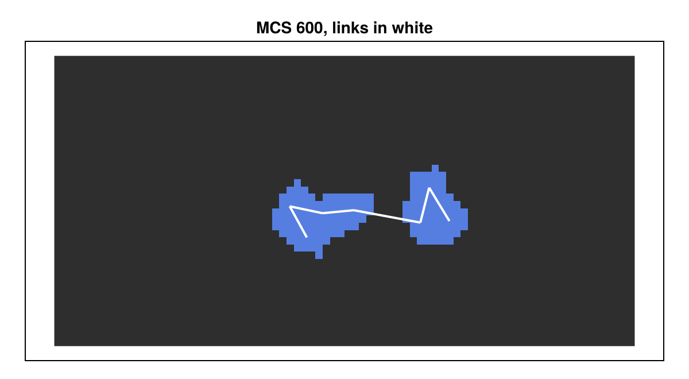
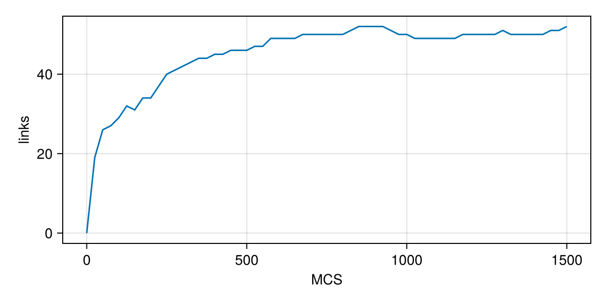

Tutorial 6: links between cells
Cells can be tied together: by junctions in an epithelium, by tethers between a leader and its followers, by springs in a mechanical model. Potts.jl represents such ties as links of a named relationship. You will learn:
- how to declare a relationship and give its links an energy;
- how to start with links, and how to make and break links with
@linkand@unlink; - how to read the links of a saved state.
The models on this page are generic teaching models.
using Potts, MakiePotts, CairoMakie
using PottsModels.Analysis: centroidsA chain of springs
Seven cells sit in a row, 6 sites apart. Each is linked to the next by a spring with rest length 6, shorter than their distance, so the chain contracts:
@potts_model Chain begin
@kinds medium cell
@parameters begin
k = 5.0 # spring constant
J[kind, kind] = [0 12; 12 8]
end
@variables rest(bond) = 6.0 # rest length, one value per link
@relationship bond(cell, cell) capacity = 2 # at most 2 links per cell
@lattice Lattice((80, 40); boundary = Closed(), neighborhood = Moore(1))
@energy begin
Volume(cell; target = 25.0, strength = 2.0)
contacts => J[kind, kind′]
edges(bond) => k * (distance - rest)^2
end
@sweep Metropolis(; temperature = 10.0)
end@relationship bond(cell, cell) capacity = 2declares a set of links between cells, each cell having at most 2.rest(bond)is an edge variable: one value per link ofbond.edges(bond) => …is an energy term summed over every link. Inside it,aandbare the two linked cells anddistanceis the distance between their centroids.
The initial links go into the operating point under the relationship's name, as pairs of cell numbers:
@named chain = Chain()
op = layout(Tiling((5, 5); spacing = 6, region = (5:76, 18:22), kinds = [:cell]), chain)
n = length(op[2].second) # number of cells
neighbours = [(i, i + 1) for i in 1:(n - 1)]
prob = PottsProblem(chain, [op; :bond => neighbours], (0, 600); seed = 1)
sol = solve(prob, SequentialCPM(); saveat = 10)
record_potts("links_chain.mp4", sol; framerate = 12, title = "", figure = (; size = (600, 330)))Reading the links
The links live in the per-cell state. CorePotts.link_store(u.cell, :bond) returns the link table of a saved state; CorePotts.linked(store, a, b) asks whether two cells are linked and CorePotts.link_count(store, c) counts the links of cell c:
using Potts: CorePotts
store = CorePotts.link_store(sol.u[end].cell, :bond)
[CorePotts.linked(store, i, i + 1) for i in 1:(n - 1)]6-element Vector{Bool}:
1
1
1
1
1
1To draw the links, connect the centroids of linked cells (centroids from PottsModels.Analysis takes the matrix of cell numbers; a site i is drawn between i - 1 and i, hence the - 0.5):
function draw_links!(ax, u, name)
store = CorePotts.link_store(u.cell, name)
xy = centroids(u.σ)
for a in eachindex(xy), b in (a + 1):length(xy)
CorePotts.linked(store, a, b) || continue
lines!(ax, [xy[a][1], xy[b][1]] .- 0.5, [xy[a][2], xy[b][2]] .- 0.5; color = :white, linewidth = 2)
end
end
fig = Figure(size = (600, 330))
ax = Axis(fig[1, 1]; aspect = DataAspect(), title = "MCS 600, links in white")
hidedecorations!(ax)
pottsplot!(ax, renderframe(sol.u[end]))
draw_links!(ax, sol.u[end], :bond)
fig
Making and breaking links
Links can also form and break during a run. @link bond when = condition checks every pair of cells that touch and are not yet linked (new_contact(a, b)), and links those for which the condition holds; @unlink bond when = condition checks every existing link. Here motile cells stick together when they meet, and a link breaks when it is stretched beyond ℓmax:
@potts_model Sticky begin
@kinds medium cell
@parameters begin
k = 2.0
ℓ₀ = 5.0
ℓmax = 9.0
J[kind, kind] = [0 10; 10 14]
end
@relationship bond(cell, cell) capacity = 3
@lattice Lattice((60, 60); boundary = Periodic(), neighborhood = Moore(1))
@energy begin
Volume(cell; target = 25.0, strength = 2.0)
contacts => J[kind, kind′]
edges(bond) => k * (distance - ℓ₀)^2
end
@link bond when = new_contact(a, b)
@unlink bond when = distance > ℓmax
@sweep Metropolis(; temperature = 12.0)
end
@named sticky = Sticky()
op = layout(Scattered(40, (4, 4); kinds = [:cell], seed = 2, gap = 2), sticky)
prob = PottsProblem(sticky, op, (0, 1500); seed = 1)
sol = solve(prob, SequentialCPM(); saveat = 25)
record_potts("links_sticky.mp4", sol; framerate = 12, title = "", figure = (; size = (420, 420)))Without the links these cells would not stick: their contact energy with each other (14) is higher than with the medium (10). The links hold the clusters together:
nlinks(u) = (s = CorePotts.link_store(u.cell, :bond); sum(c -> CorePotts.link_count(s, c), eachindex(u.cell.volume)) ÷ 2)
fig = Figure(size = (600, 300))
ax = Axis(fig[1, 1]; xlabel = "MCS", ylabel = "links")
lines!(ax, sol.t, nlinks.(sol.u))
fig
The conditions can use the kinds of the two cells (kind[a] == leader), cell variables (x[a]), the distance, edge variables and mcs. A rule can run less often: @link bond when = …, every = 10. A model can declare several relationships, each with its own capacity, edge variables, energy and rules. Cells removed by the lifecycle lose their links (a cell squeezed out by copies keeps them until the next link rule), and daughters start unlinked. See Relationships.
What you learned
@relationship name(cell, cell) capacity = kdeclares links;edges(name) => …gives them an energy witha,banddistance.- Initial links go in the operating point as
:name => [(1, 2), …]. @linkand@unlinkmake and break links during a run.
Next, Tutorial 7 scans parameters with ensembles.